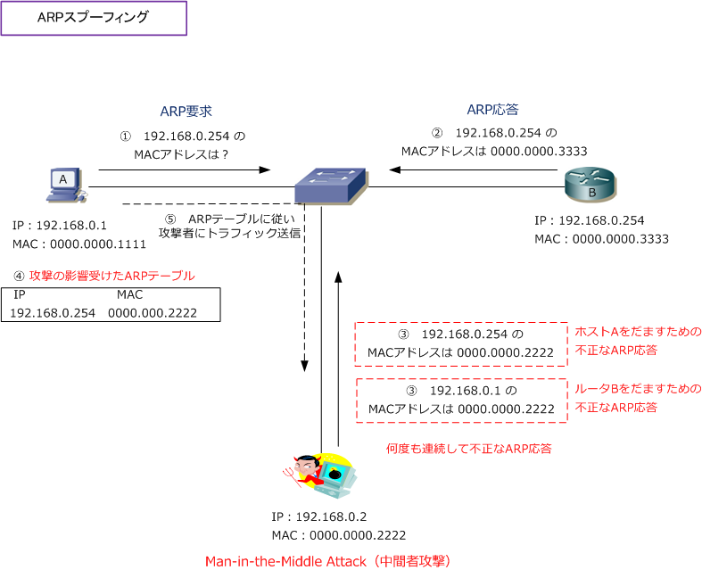

ARP Spoofing
ARPスプーフィングとは
ARPスプーフィングは、正規のクライアントからのARP要求に対して、攻撃者が「不正なARP応答」を ブロードキャストすることでLAN上の通信機器になりすます攻撃手法のことです。これにより、正規の クライアントは意図しない通信相手にトラフィックを転送する結果、情報を盗聴される恐れがあります。

?@ 正規のクライアントは、デフォルトゲートウェイのルータにパケットを転送するべくARP要求を送信。 ?A ルータは正規のARP応答を送信して、自身のIPアドレスに対するMACアドレス情報を送信。 ?B 不正なクライアントは連続して、不正なARP応答（ 偽装したARP応答 ）をブロードキャストで送信。 ?C 正規のクライアントは、不正なARP応答を受信して攻撃者のMACアドレスをARPテーブルにキャッシュ してしまう結果、攻撃者にパケット転送してしまい、トラフィックを盗聴されてしまう場合があります。
上図では、ホストAに不正なARP応答を送信し、ホストAのARPテーブルが影響を受けた通信フローを示して いますが、同じようにルータBからARP要求がきた場合は、ルータBに不正なARP応答を送信することにより ホストAとルータBの両方の通信先を攻撃者に向けることによって、通信傍受やデータ改ざんなどができます。
ARPペイロードの「送信元IPアドレスとMACアドレス」は、IPヘッダとEthernetヘッダのアドレスと異なる ことから、そのような不正なARP応答パケットは受理されないのではないかと思えそうですが、Proxy ARP などの機能をサポートするため、このような不正なARPパケットも受理してARPキャッシュしてしまいます。
※ ARPスプーフィング（ARPポイズニング）攻撃に対して、Catalystでは DAI（Dynamic ARP Inspection）機能で対策できます。